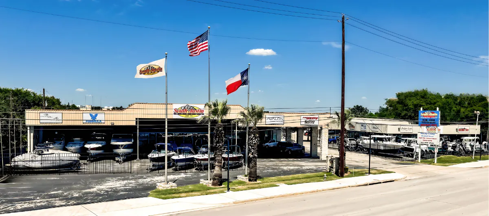
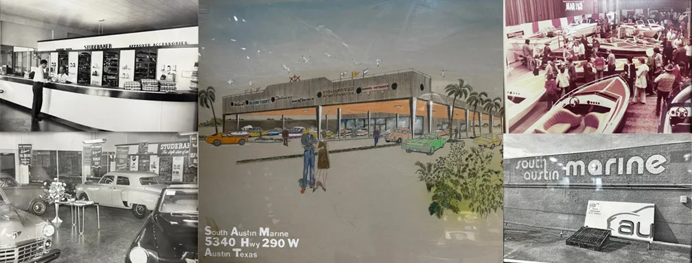
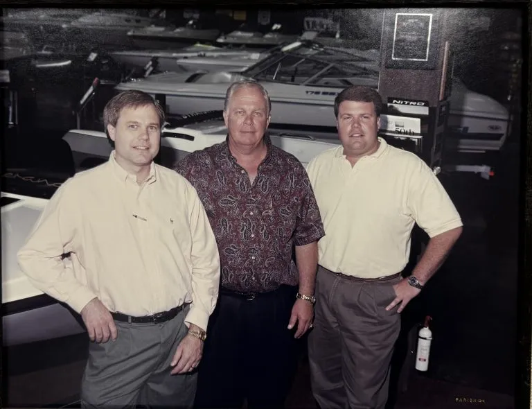
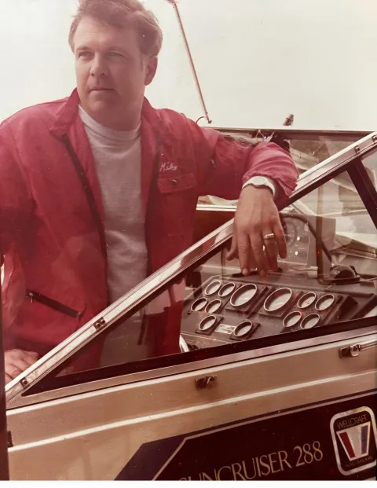

Serving the Central Texas Boating Community for Over 50 Years
South Austin Marine is a family-owned and operated boat dealership, proudly serving Austin and Central Texas since 1974. As a leading boat dealer in Austin, we are committed to providing exceptional customer service with a highly trained and courteous team that always prioritizes your needs.
At South Austin Marine, we take pride in being an MRAA/NMMA Certified Boat Dealership, a distinction earned by meeting rigorous industry standards. Our certification ensures that we are dedicated to delivering an outstanding boating experience from the moment you step into our dealership to long after your boat purchase.
Being a Marine Industry Certified Dealership means that we uphold excellence across every aspect of our business, from the quality of our boat sales and service processes to maintaining state-of-the-art facilities.
We're not just about selling boats; we're about ensuring complete customer satisfaction. As a certified dealer, we adhere to a Consumer Bill of Rights, which is proudly displayed in our showroom. This guarantees that every customer receives the highest level of transparency, respect, and care, making South Austin Marine your trusted choice for all your boating needs in Central Texas.

The South Austin Marine Facility
Since 1974, South Austin Marine has proudly served the Austin and Central Texas boating community as a family-owned dealership. However, the roots of our story reach back even further. The Black family has been deeply invested in the Austin community since the 1940s, beginning with a Studebaker dealership.
Over the decades, their dedication and entrepreneurial spirit laid the foundation for what would eventually evolve into South Austin Marine as we know it today—nearly 80 years later.

Pictured: Mike Black and His Two Sons, Wayne and Kenneth Black (Current Ownership)

Pictured: Mike Black, The Original Owner, Aboard His WellCraft SunCruiser 288 In 1975
Our mission has always been simple: to deliver top-notch customer service and ensure your boating experience is nothing short of exceptional. With a courteous and highly skilled team, we strive to make every moment on the water unforgettable.
As a family with deep ties to the community, we are honored to continue serving Austin with the same values and commitment that have guided us for generations.
Excellence in Boating Since 1974
Three generations of expertise, one commitment to excellence
Contact Us